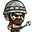
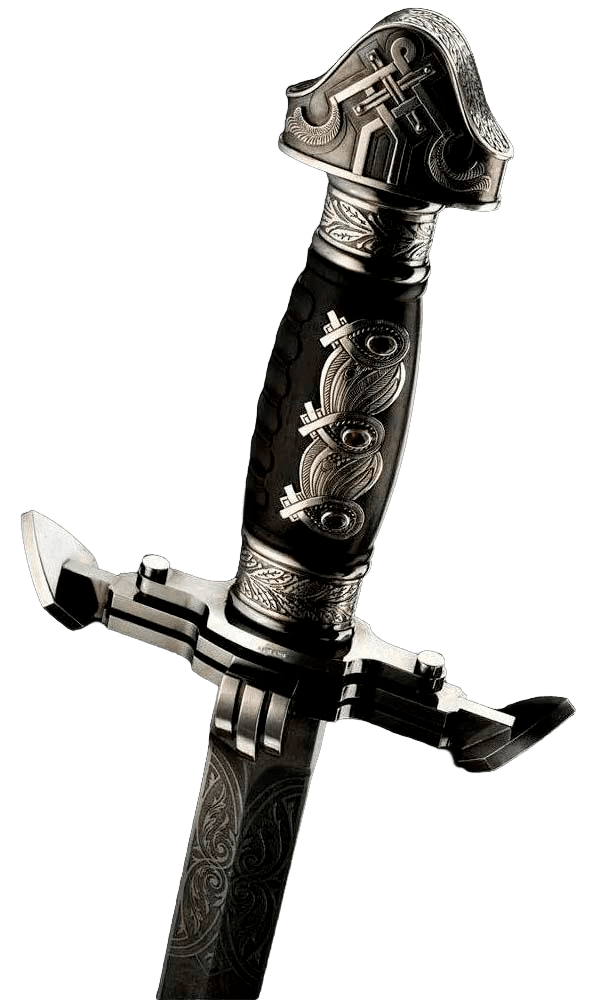

Пошаговая игра «РОГАЛИК»
❤️

👣
⚔️

Управление героем:
W – вверх, A – влево, S – вниз, D – вправо. ⚔️ Атака:
Нажмите Пробел, чтобы атаковать всех врагов на соседних клетках (сверху, снизу, слева, справа). Каждый второй удар отнимает у игрока здоровье в диапазоне 10-15, при сближении отнимается на 7 единиц. Зелье здоровья:
Если герой наступает на зелье, он восстанавливает здоровье в диапазоне 20-30 единиц, а зелье исчезает. Усиление атаки:
Если герой наступает на меч, его урон увеличивается, а меч исчезает.
W – вверх, A – влево, S – вниз, D – вправо. ⚔️ Атака:
Нажмите Пробел, чтобы атаковать всех врагов на соседних клетках (сверху, снизу, слева, справа). Каждый второй удар отнимает у игрока здоровье в диапазоне 10-15, при сближении отнимается на 7 единиц. Зелье здоровья:
Если герой наступает на зелье, он восстанавливает здоровье в диапазоне 20-30 единиц, а зелье исчезает. Усиление атаки:
Если герой наступает на меч, его урон увеличивается, а меч исчезает.
Игра окончена! Вы погибли. Начать заново?